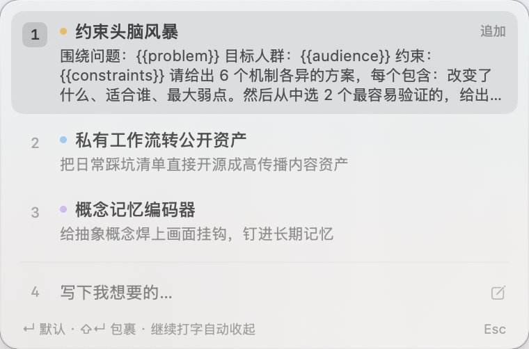
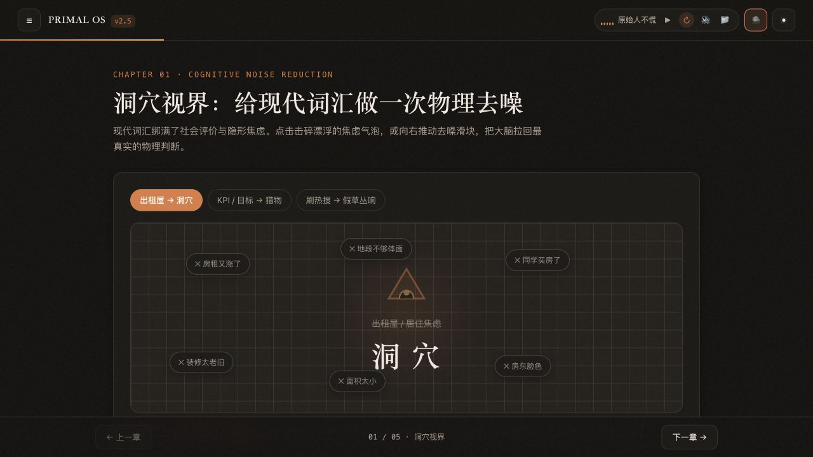
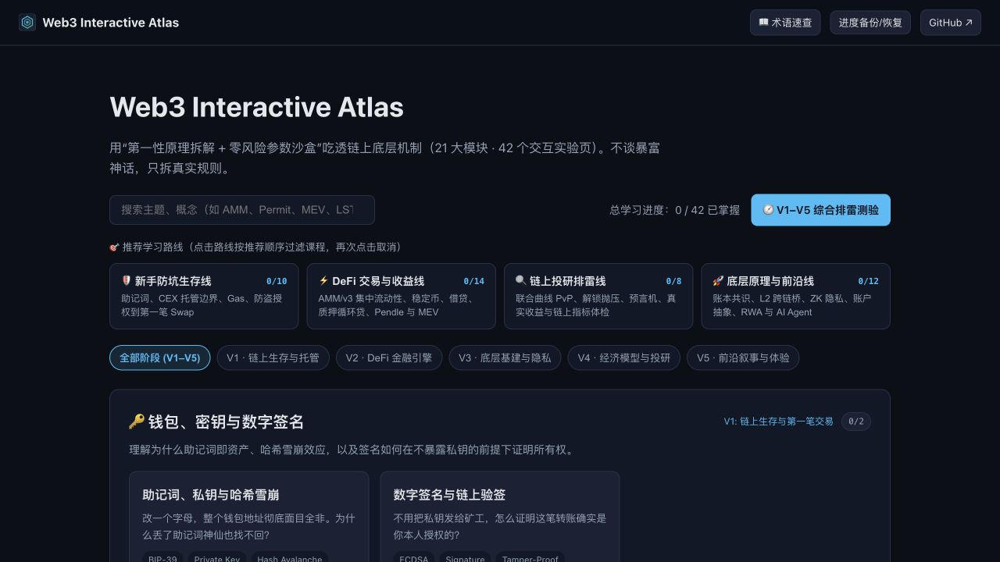
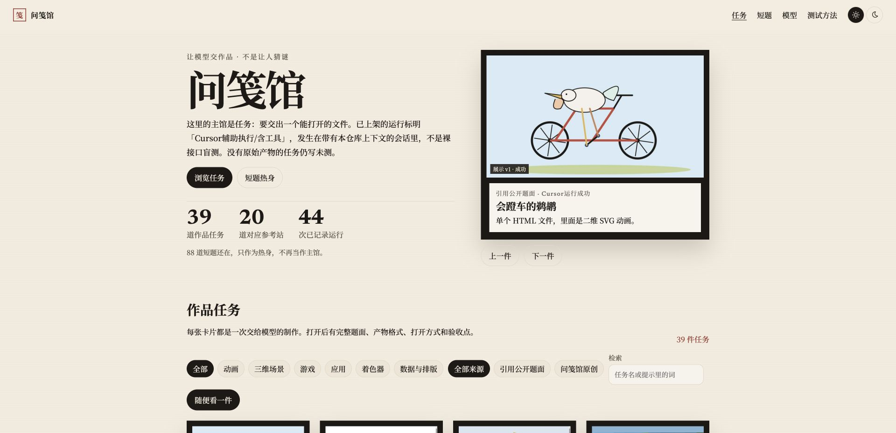
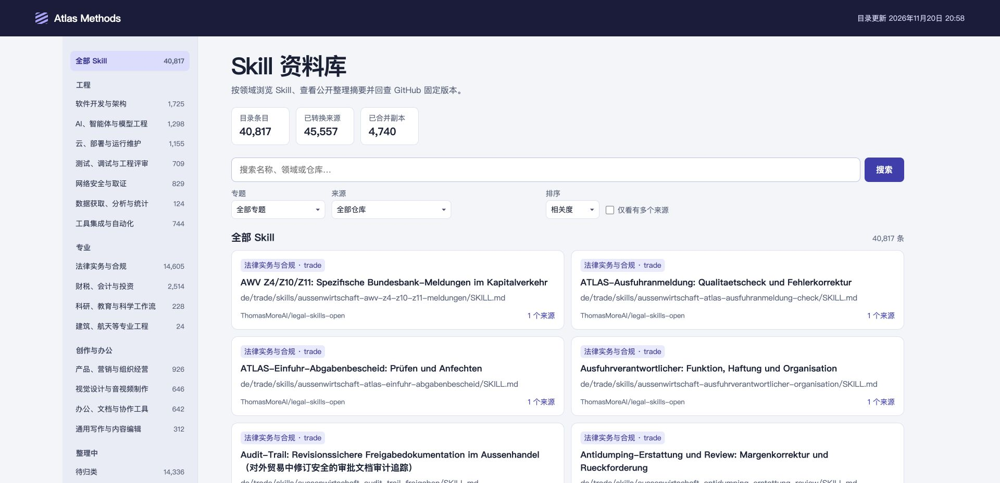
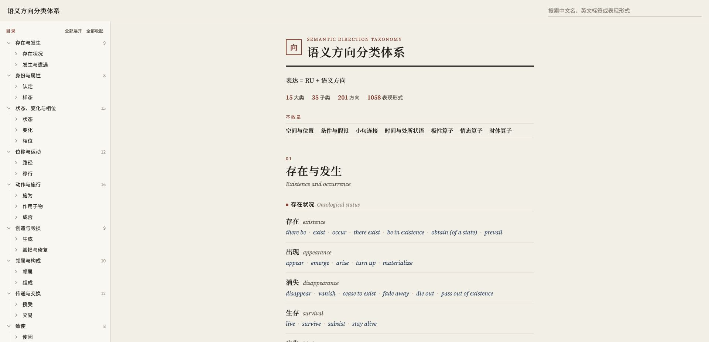
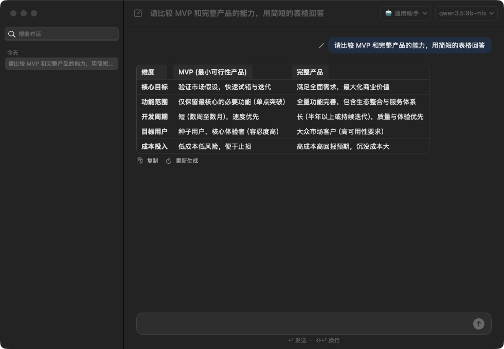

Works
Software, tools and websites I have made. Each has its own write-up, screenshots and links.

Glint · From scattered thoughts to structured tasksSoftware / macOS app

Primal OS · A primal language for everyday thinkingWebsite / interactive experience

Web3 Interactive Atlas · Explanations and interactive sandboxesWebsite / interactive learning

Human Knowledge Interactive Atlas · Explore disciplines around human experienceWebsite / interactive learning

Super Individual Toolbox · Equip One. Run Like a Team.Website / toolkit

AI Interactive Playground · Explore AI by interactingWebsite / interactive learning

DISCOVERY-TAXONOMY · Break Unknown UnknownWebsite / exploration tool

Wenjian · AI Task Gallery · AI tasks with inspectable outputsWebsite / reference tool

Prompt Taxonomy · Find a prompt for the taskWebsite / reference tool

Atlas Methods · A traceable Skill libraryWebsite / reference tool

Communicative Acts · Purpose, operation and styleWebsite / reference tool

Semantic Direction Taxonomy · Explore directions of meaningWebsite / reference tool

Lookbook · A visual index of design systemsWebsite / Tool

Aide · A local AI entry point for the desktopSoftware / macOS app

Research2Video · 研映 · From research to videoSoftware / Workflow

Application Atlas · Find real projects by scenarioSoftware / Library

P Atlas · Possibility LibrarySoftware / Library

PersonalSpace · A native macOS personal digital spaceSoftware / macOS app

Radar · An information radarSoftware / macOS app